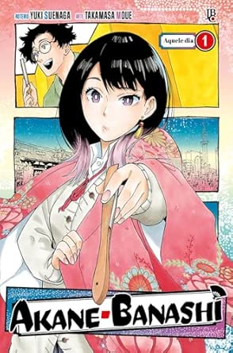

sinopse
Enquanto crescia, Akane admirava seu pai e seu rakugo, uma forma tradicional de contar histórias japonesa em que um único artista, chamado rakugoka, retrata uma história longa, complicada e muitas vezes engraçada envolvendo vários personagens, distinguida por mudanças de tom, pequenas mudanças de tom. rotações da cabeça e movimentos das mãos enquanto está parado.
Informações
- Nome: Akane Banashi
- Nome alternativo: あかね噺
- Tipo: Mangá
- Autor: Yuki Suenaga
- Volumes: 14
- Status: Em Andamento
- Demográfico: Shōnen
- Gêneros: Premiados, Comédia,Drama
- Editora: Jump Comics
- Publicado em: 2022